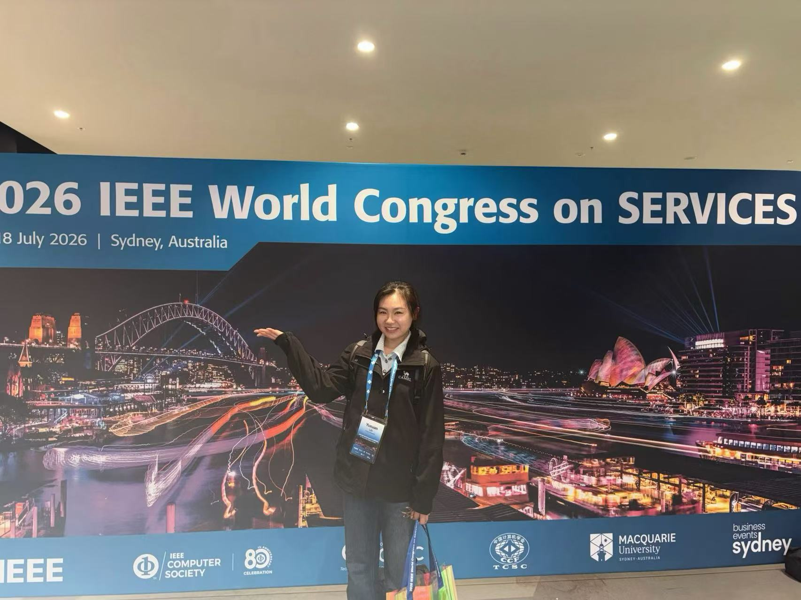
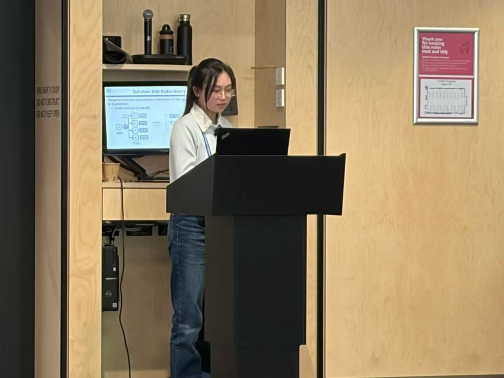
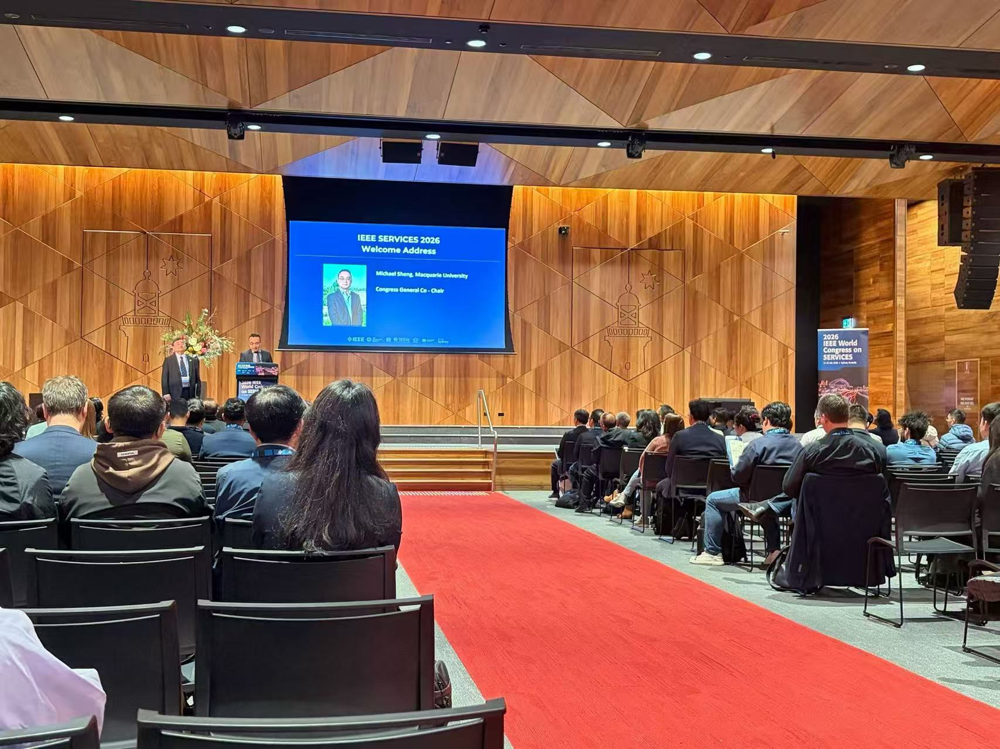
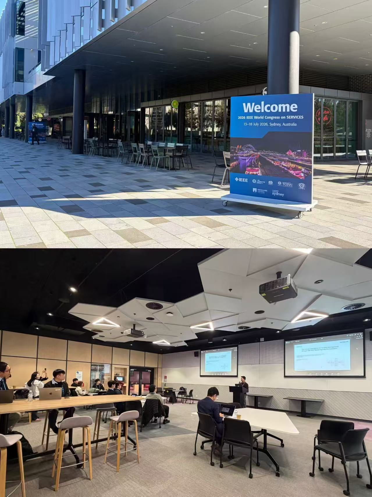
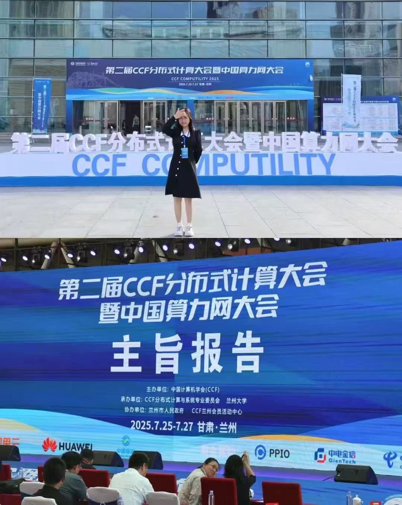
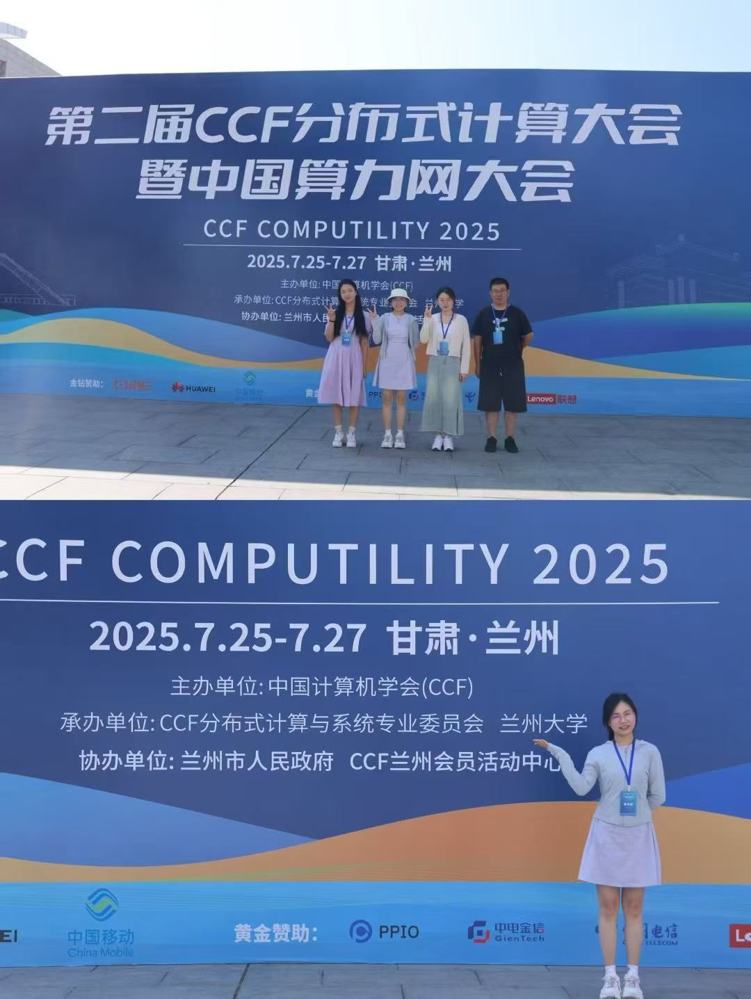
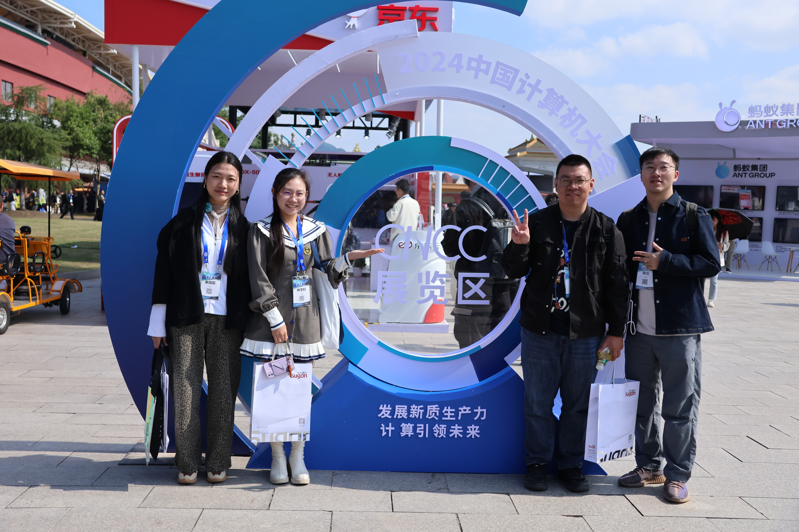
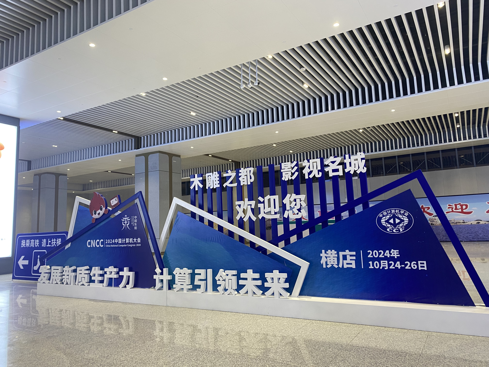
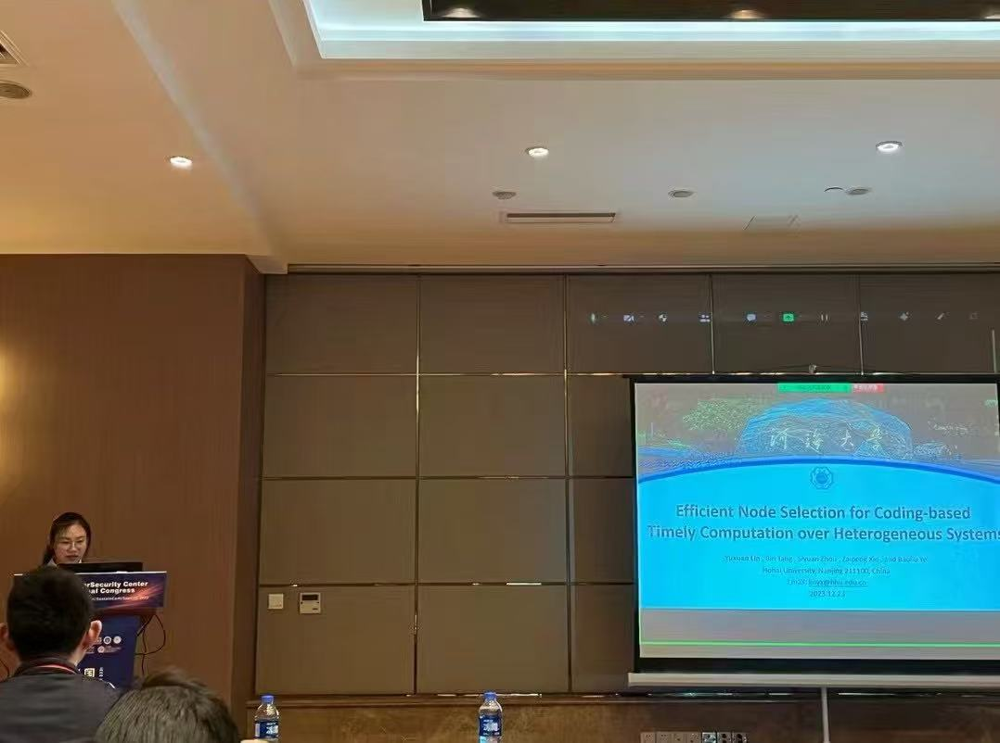
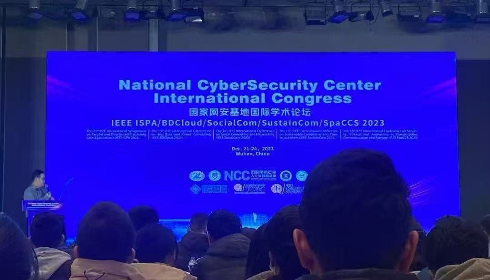

–Present
The University of Melbourne
Joint PhD Student, Faculty of Engineering and Information Technology, Australia.
PhD Candidate in Computer Science and Technology
Hohai University
The University of Melbourne
I am a PhD candidate in Computer Science and Technology at Hohai University, and a joint PhD student at the Faculty of Engineering and Information Technology, The University of Melbourne.
My research focuses on coded computation, heterogeneous distributed systems, cloud computing, edge computing, and latency-aware task scheduling.
Group Smart, Finish Fast: minimum Batch Makespan in Coded Distributed Computing
21st International Conference on Green, Pervasive, and Cloud Computing (GPC), 2026. Recently accepted.
Cost-constrained Node Selection for Timely Coded Computation over Heterogeneous Systems
IEEE Transactions on Computers, 2026. Recently accepted.
Coded Redundancy for Reducing Task Average Latency in Distributed Stream Processing Systems
IEEE International Conference on Cloud Computing (IEEE CLOUD), 2026. Recently accepted.
Optimized Power Control for Deadline-aware Coded Computing in Edge Environments
4th International Conference on Cloud Computing, Big Data Application and Software Engineering (CBASE), 2025, pp. 817–821.
Deadline-aware Load Allocation for Coded Computation over Heterogeneous Clusters
5th International Conference on Big Data, Artificial Intelligence and Software Engineering (ICBASE), 2024, pp. 102–105.
Efficient Node Selection for Coding-based Timely Computation over Heterogeneous Systems
IEEE International Conference on Parallel and Distributed Processing with Applications (ISPA), 2023, pp. 246–253.
A Content-based Intelligent Label Classification System for Warehouse Management
IEEE International Conference on Progress in Informatics and Computing (PIC), 2020, pp. 258–262.
Selected conference participation, 2023–2026.

IEEE SERVICES 2026 ViewHide 4 photos & notesI attended the 2026 IEEE World Congress on SERVICES in Sydney, joining the opening ceremony and research sessions on services and cloud computing. These photographs capture the conference venue, welcome address, and a research presentation.
Scroll through the photographs; select one to view it in full.




CCF Computility 2025 ViewHide 2 photos & notesI attended CCF Computility 2025 in Lanzhou, the second CCF conference on distributed computing and China's computing network. The meeting brought together the distributed computing community for keynote talks and research discussions.
Scroll through the photographs; select one to view it in full.

I attended the China National Computer Congress (CNCC 2024) in Hengdian, Dongyang. The opening ceremony and exhibition offered a broad view of developments across computer science, alongside opportunities to meet fellow researchers.
Scroll through the photographs; select one to view it in full.



National CyberSecurity Center International Congress 2023 IEEE ISPA / BDCloud / SocialCom / SustainCom / SpaCCS ViewHide 3 photos & notesI attended the National CyberSecurity Center International Congress in Wuhan, which brought together IEEE ISPA, BDCloud, SocialCom, SustainCom, and SpaCCS. The photographs include the congress opening, my conference badge, and the presentation of our ISPA paper, “Efficient Node Selection for Coding-based Timely Computation over Heterogeneous Systems.”
Scroll through the photographs; select one to view it in full.

–Present
Joint PhD Student, Faculty of Engineering and Information Technology, Australia.
–Present
PhD Candidate, Computer Science and Technology, Faculty of Computer Science and Software Engineering, China.
–
MSc, Computer Science and Technology. GPA: 91.05, ranked 1 of 40.
–
BSc, Computer Science and Technology, Faculty of Computer and Information. GPA: 87.36.
Hohai University, Faculty of Computer Science and Software Engineering
–
Supported cohort administration, including student research, employment, and related matters.
–
Assisted with grading assignments and tests and recording students' class performance.
–
Communicated academic announcements, including exam schedules and course selection notices.
–
Assisted the counselor with student affairs and management.
–
Helped organize college lectures on career planning and social practice.